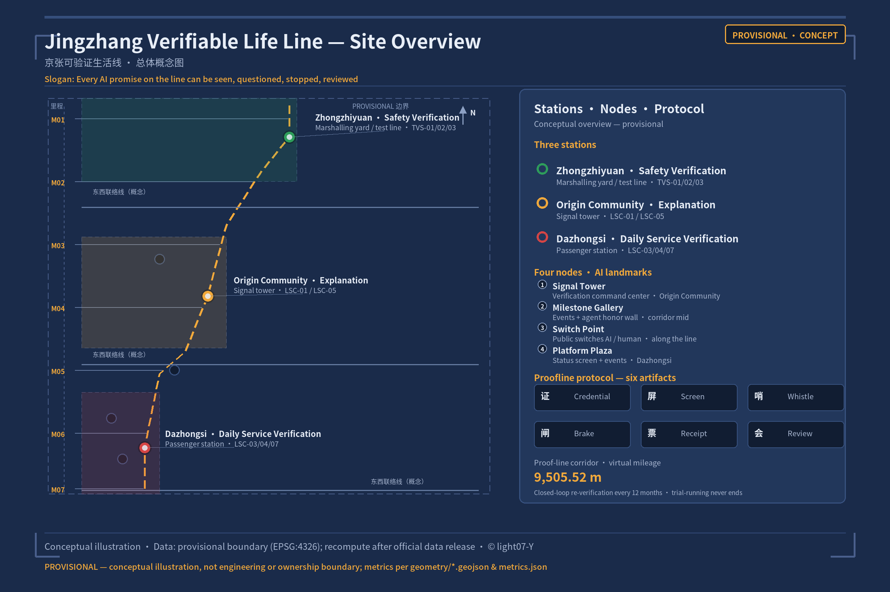
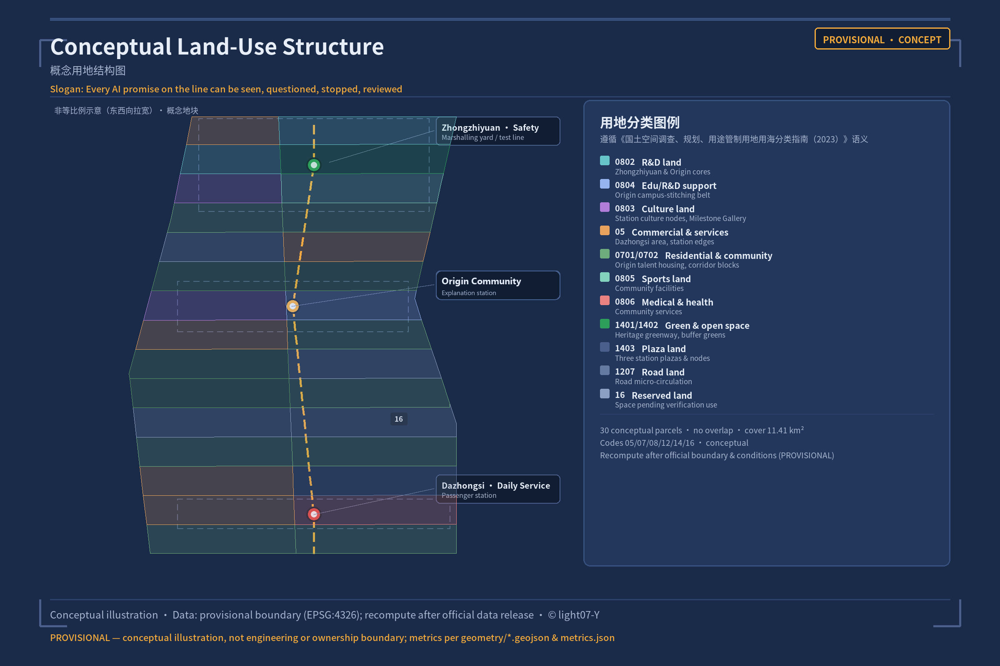
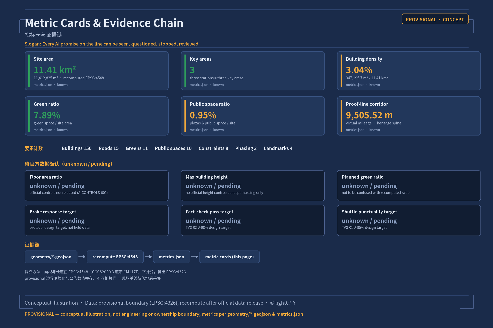

Every AI promise on the line can be seen, questioned, stopped, and reviewed.
Not an engineering line that is "delivered once built" — a public line permanently in trial-running state, where every service can be stopped and inspected at any time.
Status Screen · three stationsProofline six-piece suiteThree-Level Scope12 AI scenario cards13 known metricsunknown shown as text, never as numbers
M01
Overview MapSite Overview
site-overview.en.png · geometry + metrics
Concept in one sentence: with "verification" as public infrastructure, AI promises are translated into human-verifiable facts — a life line permanently in trial-running state.
Differentiation statement: proposals on the same "verification" theme build the institutional expression of verification infrastructure; this proposal builds the everyday-ization of verification — certificate experiences within easy reach while grocery shopping, commuting, seeking healthcare or taking a stroll.
Overall spatial structure — "one spine, three stations, stations along the line, closed-loop re-verification": one spine = the Jing-Zhang Railway Heritage Park corridor as the main spine of the verification line (the Proofline main corridor); three stations = the three key areas, each carrying one verification-station function; stations along the line = AI services arranged in the form of stations along the line, where the public can enter to question and leave to exit; closed-loop re-verification = every service undergoes mandatory 12-month re-verification (the "overhaul" regime) — trial running never ends. Four nodes: the Signal House (verification command center), the Milepost Gallery (verification events + agent contributor honor wall), the Switch Point (public switching between AI and human), the Platform Square (status screens + event assembly).

Fig. 1 Site overview (conceptual; the provisional boundary is shown by dashed constraints)PROVISIONAL
The figure is a decorative conceptual illustration; authoritative areas, metrics and compliance claims follow geometry/*.geojson, metrics.json, the matrices and the self-check results.
SCREEN
Status ScreenPublic Status Screen
green = trial-running / yellow = speed-restricted / red = out of service
The service state of each of the three stations is permanently publicly visible on a communal Status Screen using the three signal colors. Click the buttons inside a card to switch its state (pure CSS/JS). Default state: trial-running.
Zhongzhiyuan Station · Safety Verification Station
Zhongzhiyuan AI Independent Innovation Acceleration Area · marshalling yard / test line
Trial-runninggreen signal
TVS-01/02/03 industrial testing and validation: test-line Status Screen, test-engineer watchkeeping, test emergency Stop Switch, test-report Service Receipt.
AI Origin Community Station · Interpretation Station
Beijing AI Origin Community · Signal House / inquiry desks
Trial-runninggreen signal
LSC-01 public AI guided tours, LSC-05 public AI fact-checking: explanation screens, public inquiry desks, switchable human guides.
Dazhongsi Station · Daily Service Station
Dazhongsi AI Industry Cluster · passenger station / Platform Square
Trial-runninggreen signal
LSC-03 nighttime delivery and quiet-space coordination: Platform Square status screens, event assembly, daily-service receipts.
These states are conceptual interaction examples (trial-running by default) and do not represent real-time operation; real states are governed by protocol operating data.
Proofline Verification Protocol — the six-piece suite
Every AI service launch must pass the complete protocol chain of the six-piece suite: one Certificate, one Status Screen, one Watchkeeper, one Stop Switch, one Service Receipt, one Review Session.
One Certificate
Service registration + verification baseline: public registration before launch; the verification baseline is publicly displayed.
One Status Screen
Green/yellow/red public status screen: service state is always visible and readable by anyone.
One Watchkeeper
Human duty officer: human watchkeeping, spot checks and explanations; machines never decide alone.
One Stop Switch
Stop switch, triggerable by the public: any violation pauses the service.
One Service Receipt
Service receipt voucher: every service issues a storable, appealable result receipt.
One Review Session
Public review session: monthly review + 12-month mandatory re-verification + the annual Verification Festival (September).
M02
Three-Level ScopeScope Framework
43.6 / 11.4 km² · 368.4 ha
The work is organized along the three layers defined by the announcement. The three layers are not separate sets of drawings: the Coordinated Research Area decides the industrial and ecosystem value of "verification" as a governance method; the Overall Design Area grounds the method in spatial structure and facility capacity; the key areas turn the protocol into station scenarios that can be experienced, re-checked and operated.
Layer
Official scope
What this proposal carries
Data anchor
Coordinated Research Area
43.6 km², bounded by the North Fifth Ring Road to the north, the Jingzang Expressway to the east, Xizhimen Outer Street to the south, and Wanquanhe Road to the west
The innovation chain and ecosystem framework of verification as an urban governance method (Chapters 3-4)
11.4 km²: urban districts and industrial zones within 1-2 km of the Jing-Zhang Railway Heritage Park
The overall spatial structure of "one line + three verification stations + four nodes" (Chapters 4-9)
land_use.geojson#LU-001, roads.geojson#ROAD-001
Key-Area Detailed Design Area
368.4 ha across three detailed-design areas
Three stations = Safety Verification Station / Interpretation Station / Daily Service Station (Chapter 5)
key_areas.geojson#PROV-KEY-001/002/003
All geometry-derived areas and ratios are recalculated in metrics.json (EPSG:4548 projection) and marked with provisional constraints; any quantity that cannot be recalculated from structured data must not enter formal conclusions.
M03
Key AreasThree stations · four landmarks
three stations = three verification stations · four landmarks
The three key areas are the proposal's "three verification stations" — merging the detailed-design tasks required by the announcement with the three-station division of the verification protocol.
Key area
Verification station function
Design positioning
Spatial moves
AI scenarios & protocol anchor
Zhongzhiyuan AI Independent Innovation Acceleration Area
Safety Verification Station (marshalling yard / test line)
Strengthen the Qinghe interface, industrial display, low-carbon innovation exchange and external transport organization; green spaces carry the open testing grounds and the standards-governance display
TVS-01/02/03, test-line Status Screen, test-engineer watchkeeping
Beijing AI Origin Community
Interpretation Station (Signal House)
Campus-adjacent outcome-transfer and talent community
Stitch campus, park and blocks with walking and cycling connections; add outcome-release, talent-service, residential-living and open-source-collaboration spaces; set up the Signal House and public inquiry desks
Urban-style intelligent-economy and international-exchange block
Dazhongsi station integration; four-quadrant pedestrian connectivity; renewal of commercial services and the public environment around key enterprises; set up the Platform Square and the daily-service Status Screen
Four AI pilgrimage landmarks (responding to agent.4): ① the Signal House (inside the AI Origin Community station; the verification command center, transparent and open to visits); ② the Milepost Gallery (mid-line; the verification event log and the agent-contributor honor wall); ③ the Switch Point (an interactive public space where the public switches between AI and human service modes by hand); ④ the Platform Square (at Dazhongsi station; public status screens + the main venue of the Verification Festival).
The conceptual land-use layout covers the Overall Design Area boundary without overlap, and the land-use codes follow the semantics of the Guidelines for Land-Use Classification for Territorial Spatial Surveys, Planning, Use and Control of Land and Sea (2023).
Land-use category
Code
Conceptual layout
Research land
0802
Zhongzhiyuan and AI Origin Community cores
Education-research support
0804
AI Origin Community school-adjacent stitching belt
Cultural land
0803
Cultural display nodes of the three stations; Milepost Gallery
Commercial and service land
05
Dazhongsi commercial district; station surroundings
Residential and community services
0701/0702
AI Origin Community talent housing; communities along the line
Green and open space
1401/1402
Heritage-corridor green belt; buffer green spaces
Plaza land
1403
Fore-plazas and nodes of the three stations
Road land
1207
Road microcirculation
Reserved land
16
Reserved space for uses awaiting verification (echoing "permanently trial-running")

Fig. 3 Conceptual land-use structure (conceptual recommendation; to be recalculated after the official boundary and planning conditions are confirmed)PROVISIONAL
M05
Mobility & Blue-GreenProofline main corridor
proofline main corridor
Mobility organization revolves around the main corridor of the verification line: the heritage-corridor main corridor carries walking and cycling (road_class = greenway/walking), and the three stations are linked by walking-and-cycling connectors (virtual mileage 9505.52 m, proofline_route_length_m); transit-station integration and four-quadrant pedestrian connectivity at rail stations such as Dazhongsi are included in the key-area actions; road microcirculation and plot-access roads are conceptual recommendations and do not involve road-alignment engineering schemes.
LSC-06 explainable congestion management is anchored in the Xiaoyue River Scenario Enablement Wing: when signal coordination runs, the public is shown "why traffic is being dispatched this way", and the dispatch basis and receipts enter the Review Session. Municipal and New Infrastructure (edge-computing points, distributed energy, low-interference sensing) are proposed as conceptual prototypes without engineering-feasibility conclusions; the layout of public service facilities (community services, accessibility, elderly-care aging support) follows the Article 39 boundary of the Barrier-Free Environment Law.
The blue-green system takes the heritage-park corridor as its main axis (green corridor + buffer green space + in-station parks), with a conceptual green ratio of 0.078915 (green_ratio, provisional recalculation); the public space system consists of the fore-plazas of the three stations, the four nodes and community public spaces, with a conceptual public-space ratio of 0.00953 (public_space_ratio).
Urban character control adopts "signal language" as the direction of the wayfinding system: the three signal colors enter the wayfinding system as public-service status colors, the milepost is the spatial memory symbol, and the running-chart style is the information typographic language. The three-act cultural narrative — "Signal (Zhan Tianyou's switchback and safety rules, 1905-1909) → Switch Point (the Zhongguancun direction change, 1949-2009) → Verification (a new signal system for the AI era today)" — is anchored in the arc from the people who designed railways to the people who design rules.
M07
BuildingsBuilding scale
~150 concept volumes · 13 types
Building scale is expressed as about 150 conceptual building volumes (about 55 in Zhongzhiyuan, 50 in the AI Origin Community, 40 in Dazhongsi, and a few along the line); the conceptual building footprint area totals 339482.799 m² (building_footprint_area_sqm), with a conceptual building density of 0.029745 (building_density). The types cover all 13 classes in enums/building_types.json: AI R&D, laboratory, incubator, office, mixed-use, education-research support, residential, talent apartment, community service, commercial, cultural display, transit interchange, existing-preserved.
Building height and Floor Area Ratio are conceptual indication values and do not constitute statutory controls; the Demolish-Renovate-Retain strategy follows the three principles of "preserve heritage and existing anchors, renew inefficient spaces, leave blank what awaits verification" as a conceptual classification, without designating specific plots.
M08
Renewal Projects10 concept items · 3 phases
10 concept projects · three-phase implementation
Conceptual renewal project list (10 items, all "conceptual recommendations"; each item is tagged with its verification-protocol link and implementation dependencies):
Public-oriented renovation of the Zhongzhiyuan test line and testing grounds;
the Signal House (interpretation hub at the AI Origin Community);
the Milepost Gallery and the milepost band along the line;
the Switch Point interactive public space;
the Dazhongsi Platform Square and the Status Screen system;
infill of the heritage-corridor main walking and cycling corridor;
paper-based service entries and receipt kiosks at the three stations;
the Xiaoyue River explainable congestion-management scenario belt;
community AI service stations (with human watchkeeping seats);
the Verification Festival event grounds and the running-chart release hall.
Phased implementation (responding to agent.6 landing path):
Phase
Scope
Content
Verification status
Phase 1 · Verification launch (PHASE-001)
Three key areas and station surroundings
The three stations deliver verification functions; TVS-01/02/03 go live; the Signal House and the Platform Square enter operation
First services enter Certificate registration; trial-running
Phase 2 · Corridor-wide infill (PHASE-002)
Full heritage corridor
Walking and cycling infill of the main corridor; milepost band; Switch Point; community service stations roll out
All corridor services join the 12-month mandatory re-verification
Phase 3 · Two Wings coordination (PHASE-003)
Zhongguancun Technology Services Wing; Xiaoyue River Scenario Enablement Wing
Factor-allocation linkage; explainable congestion management delivered; international track of the Verification Festival
The Protocol becomes an inter-belt governance product exported for international communication
Policy recommendations (conceptual): a recommended (non-statutory) Certificate registration for AI services before launch; a four-step scenario access process of open application → sandbox testing → human review → public demonstration; a public disclosure mechanism for verification results and receipts; and developer-community operations — all are directions open to further study and do not constitute government commitments.
M09
AI ScenariosAI Scenario Cards
12 cards: 3 TVS + 9 LSC
Every scenario card follows the same protocol card fields: spatial location | operator (responsible role) | baseline source and current status | observation target / sample boundary / time window | success threshold | stop threshold | independent shutdown review role (human) | equivalent human service | data retention / deletion receipts / review cycle | appeal entry / pre-scaling review conditions | protocol chain mapping (Certificate, Status Screen, Watchkeeper, Stop Switch, Service Receipt, Review Session).
Baseline honesty statement: baselines and thresholds are design-proposed target values, not field data already obtained; on-site baselines are to be collected after implementation (expressed as unknown; A-NO-FIELD-BASELINE-001). This proposal does not disguise conceptual target values as achieved figures.
Industrial testing and validation scenarios ×3 (Zhongzhiyuan station, TVS-01~03)
Scenario
Success threshold (target)
Stop threshold (hard)
Human review
Recovery path
Protocol chain
TVS-01 Autonomous shuttle testing and validation line
On-time rate ≥ 95%
any single human-vehicle contact incident stops the service
Safety attendant on every shuttle
Re-run the Certificate process after rectification
Certificate registration → test-line Status Screen → test-engineer watchkeeping → test emergency Stop Switch → test-report Service Receipt → test Review Session
TVS-02 Public LLM service validation (government / city Q&A)
Fact-verification pass rate ≥ 98%
3 consecutive factual errors or 1 high-hazard error
Duty-watchkeeper spot checks + public inquiry desk
TVS-02 content compliance and data boundaries follow the Interim Measures for the Administration of Generative Artificial Intelligence Services; no "statutory N-day deletion" commitment is fabricated — the operational design of "deletion receipts + review cycle" responds instead.
Daily life scenarios ×9 (LSC-01~09; stop thresholds and human review are protocol design frameworks; target values await on-site baseline collection)
Scenario card
Spatial location
Stop threshold (design target)
Human review (fallback)
LSC-01 Public AI guided tour
Interpretation Station (AI Origin Community)
Persistently misleading explanations switch to human
Switchable human guides
LSC-02 Accessible switchable routes
Along the line (statutorily enumerated service venues)
Guidance beyond the Article 39 statutory enumeration stops the service
Human windows and voice assistance
LSC-03 Nighttime delivery and quiet-space coordination
Dazhongsi
Deliveries violating quiet hours stop the service
Rider manual delivery fallback
LSC-04 Paper-based service entry
Communities along the line (e.g., Granny Wang)
Missing paper receipts stop the service
Human errand assistants throughout
LSC-05 Public AI fact-checking
Inquiry desks at the Interpretation Station
Verification conclusions without source basis stop the service
Check-desk duty staff review
LSC-06 Explainable congestion management
Xiaoyue River Scenario Enablement Wing
Dispatch explanations inconsistent with actual signals stop the service
Dispatcher / traffic-police confirmation
LSC-07 Thermal-comfort alerts
Public spaces
Extreme-weather alerts without corresponding response stop the service
Emergency watchkeeping staff respond manually
LSC-08 Community service resource matching
Community service stations
Recommended resources without social-worker confirmation stop the service
Human social-worker review
LSC-09 Data deletion and exit receipts
Along the line (exit yields a receipt)
Missing deletion-receipt vouchers stop the service
Human acceptance windows
The full list of 12 cards, the threshold tables and the spatial placements are fully consistent with Chapter 6 of proposal.md (scenario_card_count=12, industrial_tvs_count=3).
M10
Core Metrics13 known + 6 unknown
13 known + 6 unknown · digit-identical to metrics.json
Indicators fall into two classes: recomputable indicators (known) — all recalculable from the submission-package geometry and structured data; geometry-derived indicators carry medium confidence and are marked with provisional constraints; indicators pending official data (unknown) — honestly marked with the reason; this page always displays the text "unknown / pending" and never renders them as numbers.
site_area_sqm · Site area11412825.386m² · EPSG:4548 recalculation · provisional (medium)
green_ratio · Conceptual green ratio0.078915green_space / site_area · provisional recalculation
industrial_tvs_count · Industrial TVS count3TVS-01~03 at Zhongzhiyuan station (high)
user_persona_count · User persona count6P01~P06 review seats (high)
landmark_count · AI pilgrimage landmark count4Signal House / Milepost Gallery / Switch Point / Platform Square (high)
Metrics pending official data (unknown / pending — never rendered as numbers)
floor_area_ratio · Floor Area Ratiounknown / pendingOfficial regulatory-planning indicators not published; pending formal planning conditions (A-CONTROLS-001)
building_height_max_m · Max building heightunknown / pendingOfficial height controls absent; conceptual volume heights are indication values and do not constitute statutory controls (A-CONTROLS-001)
planned_green_ratio · Planned green ratiounknown / pendingOfficial planned green ratio absent; must not be conflated with the conceptual green_ratio recalculation
stop_response_target_min · Stop-switch response time targetunknown / pendingOperational design target, not measured; field baseline to be collected after implementation (A-NO-FIELD-BASELINE-001)
fact_check_pass_rate_target · Fact-check pass-rate targetunknown / pendingTVS-02 ≥ 98% is a design target value, not an achieved indicator (A-PROTOCOL-TARGETS-001)
shuttle_punctuality_target · Shuttle on-time-rate targetunknown / pendingTVS-01 ≥ 95% is a design target value, not an achieved indicator (A-PROTOCOL-TARGETS-001)

Fig. 5 Metric cards and evidence chain (geometry-derived metrics → metrics.json → this page)PROVISIONAL
Recalculation method: areas and lengths are computed in EPSG:4548 (CGCS2000, 3-degree zone, CM117E) and output in EPSG:4326; the provisional recalculated values coexist with the announcement figures without replacing them.
M11
Task CoverageAnnouncement 1.3/1.4/1.5 + agent.1–6
announcement 1.3/1.4/1.5 + agent.1–6
compliance_matrix.json covers all 23 required items of announcement sections 1.3/1.4/1.5 and agent.1–agent.6 (23 items × 8 fields, zero gaps); standard_matrix.json covers 5 mandatory standards (addressed) and 1 material gap (data_gap); design_depth_matrix.json covers 15 depth requirements. Chapter response list:
Task
Requirement
Responding chapters / deliverables
Announcement 1.3
Full-stack independent AI innovation system, innovation ecosystem and talent structure, high-quality scenarios
Chapters 3, 6, 7
Announcement 1.4
Three-level scope (coordinated research / overall design / key areas)
Chapters 2-5
Announcement 1.5
Indicator system, area recalculation and compliance matrix
Chapter 11 + Core Metrics on this page
agent.1
Naming system and visual identity (primary name, motto, logo direction, five functions, three zones and two wings)
Chapter 3, §3.1
agent.2
Global AI innovation ecosystem cases and full-stack independent innovation ecosystem research
Chapter 3, §3.2 / 3.3
agent.3
User profiles (6 review seats) and AI scenario cards (12)
Chapter 6, §6.1 / 6.2
agent.4
Key-area detailed design (three verification stations + four AI pilgrimage landmarks)
Chapter 5
agent.5
Wayfinding / signage / symbol system and international communication narrative
Chapter 9 (signal language + three-act narrative)
agent.6
Landing path: renewal project list, implementation policy and phased plan
Chapter 10 (10 items + PHASE-001/002/003)
M12
Self-Check Statusself_check.json · 5/5 PASS
self_check.json · 5 items, all PASS
Submission-package self-check record (self_check.json, schema v0.1.0):
PASSBOUNDARY_TRUST
Provisional boundary is present; replace with official redline before professional scoring. (major)
PASSKEY_AREAS_TRUST
Three required key areas are provisional; replace with official polygons before professional scoring. (major)
PASSLAND_USE_TOPOLOGY
Initial land-use polygons are derived from site boundary partitioning. (major)
PASSVISUAL_STATIC
Static HTML visualization is generated without external dependencies. (info)
PASSPROFESSIONAL_EVIDENCE
Proposal includes references to standards, design depth items, geometry, metrics, sources, and assumptions. (major)
M13
Sourcessources.json · 12 entries
sources.json · 12 entries (all registry IDs)
Source list consistent with sources.json (12 entries; URLs are recorded in sources.json — this offline page prints no links):
SITE-PACKAGEofficial_public
brief/site-package/: project brief, enums, allowed design space, ranges, and schemas.
Measures for the Administration of Urban Design (MOHURD Order No. 35): purpose and scope, public-space and urban-character reference; not for approval.
Measures for the Formulation and Approval of Regulatory Detailed Planning for Cities and Towns: RDP-depth language and implementation boundaries; fabricating statutory FAR/height/redline conclusions is prohibited.
Guidelines for Land-Use Classification for Territorial Spatial Surveys, Planning, Use and Control of Land and Sea (2023): the semantic basis of the land-use codes.
Interim Measures for the Administration of Generative Artificial Intelligence Services: TVS-02 content-compliance boundary; Articles 14/15 deletion and appeal boundaries.
Law of the People's Republic of China on Building a Barrier-Free Environment, Article 39: LSC-02 human-service venues limited to statutorily enumerated places.
M14
Assumptionsassumptions.json · 10 active
assumptions.json · 10 items, all active
Key assumptions (consistent with assumptions.json, 10 items, one sentence each, referencable by the compliance matrix):
A-CONTROLS-001
Official regulatory controls (FAR/height/density/green ratio/setback) are absent; related metrics are marked unknown pending formal planning conditions.
A-BOUNDARY-001
Site and key-area geometries are provisional at medium confidence; the whole package is recalculated once official data is published.
A-AREA-MISMATCH-001
Provisional recalculated areas differ from announced values; the two must not substitute for each other.
A-NO-SITE-VISIT-001
No site visit was conducted; current-condition judgments rely on the announcement, task book, and public materials.
A-NO-FIELD-BASELINE-001
Scenario baselines and thresholds are design-suggested target values; field baselines await on-site collection and are expressed as unknown.
A-CONCEPT-ONLY-001
All spatial, activity, and policy proposals are concept suggestions and do not constitute government review conclusions or implementation commitments.
A-PERSONA-SAMPLE-001
User personas are synthesized typical-role samples for design validation, not measured data.
A-LANDUSE-CONCEPT-001
Land use and building massing are concept suggestions to be recalculated after official boundaries and planning conditions are confirmed.
A-PROTOCOL-TARGETS-001
Protocol target values (response time, pass rates, etc.) are operational design goals, not achieved indicators.
A-PRIVACY-MIN-001
Scenario data follows data minimization without identifiable behavioral profiling; deletion-receipt design follows Articles 14/15 boundaries of the Generative AI Interim Measures.